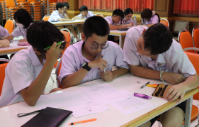

Portfolio
Profile
Education
Activities
Certificate
Transcript
My work
Activities

รางวัลชนะเลิศการแข่งขันทักษะวิชาการ “Who’s A Genius?” จัดโดยโครงการหลักสูตรภาคภาษาอังกฤษ เป็นการแข่งขันประเภททีม 3 คน
โดยแบ่งออกเป็น 2 รอบ รอบแรกเป็นการทำข้อสอบจำนวน 100 ข้อ ซึ่งประกอบด้วยวิชาคณิตศาสตร์ วิทยาศาสตร์ (ฟิสิกส์ เคมี ชีววิทยา)
เทคโนโลยีคอมพิวเตอร์ สังคมศึกษา โดยคำถามทั้งหมดเป็นภาษาอังกฤษ และวิชาภาษาอังกฤษ ภาษาจีน ภาษาญี่ปุ่น และภาษาฝรั่งเศส
ในรอบที่สองเป็นแบบ Q&A ตอบคำถามแต่ละวิชาที่สุ่มได้โดยครูชาวต่างชาติเป็นผู้อ่านคำถาม ซึ่งกิจกรรมนี้ทำให้ผมได้รับประสบการณ์ที่ดี เพราะเป็นกิจกรรมที่ช่วยส่งเสริมทั้งทักษะวิชาการ
และทักษะการทำงานเป็นทีม ซึ่งสามารถนำไปประยุกต์ใช้ในชีวิตประจำวันได้

ผมเป็นผู้ช่วยครูเขียนโค้ดเพื่อพัฒนา AI Attendance Checker และร่วมทดสอบใช้โปรแกรมในการตรวจจับใบหน้าของนักเรียนในการเช็คชื่อเข้าห้องเรียน
ซึ่งเป็นโครงงานที่ร่วมกันพัฒนาเพื่อเข้าแข่งขันทักษะ Computer Project Work ในงานมหกรรมวิชาการห้องเรียนพิเศษภาษาอังกฤษภาคกลาง
โดยผลงานและการนำเสนอมีความน่าสนใจ ทำให้น้อง ๆ ที่นำเสนอได้รับรางวัลเกียรติบัตรเหรียญทอง ระดับชาติ ซึ่งผมรู้สึกดีใจกับน้อง ๆ ที่ได้รับรางวัล
และภาคภูมิใจที่ได้เป็นส่วนหนึ่งในความสำเร็จครั้งนี้ นอกจากนี้ผมยังได้รับความรู้เพิ่มเติมจากครูขณะเขียนโค้ด และเรียนรู้ทักษะการทำงานเป็นทีม การช่วยเหลือซึ่งกันและกัน
เข้าร่วมอบรมเชิงปฏิบัติการเบื้องต้นด้วยบอร์ดไมโครคอนโทรลเลอร์
จัดโดยกลุ่มสาระการเรียนรู้คอมพิวเตอร์ โรงเรียนราชโบริกานุเคราะห์
เข้าร่วม workshop online “Basic Python
เข้าร่วมกิจกรรม Online Open House
Image Processing” เรียนรู้การประยุกต์ใช้ AI
Digital Design and Creative Technology
ผ่านกิจกรรมต่าง ๆ โดยเรียนรู้การใช้ python
เพื่อศึกษาเนื้อหาของหลักสูตร การจัดการ
ในการนำข้อมูลกับโมเดลมาใช้งานประมวลผล
เรียนการสอนและแนวทางการทำงาน
จากภาพในรูปแบบต่าง ๆ ของร่างกาย
Next